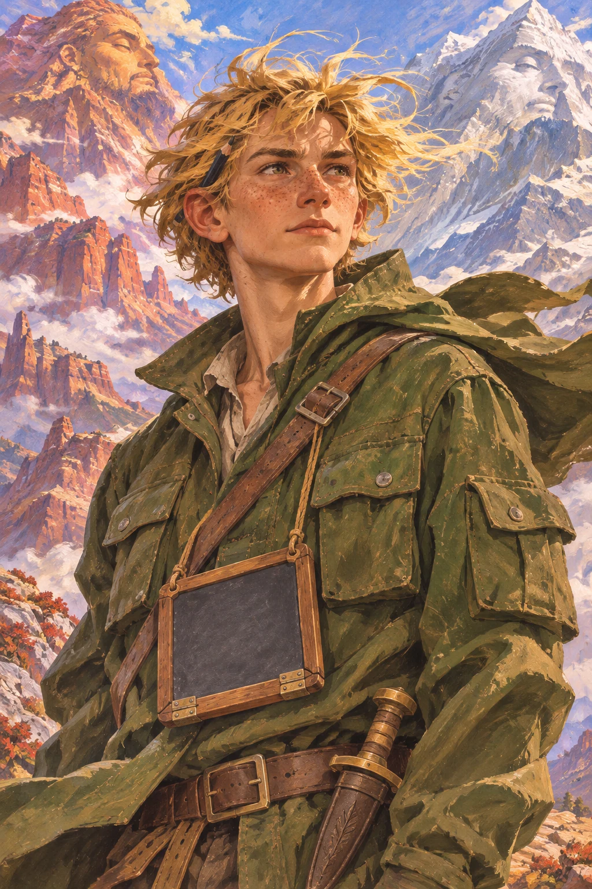
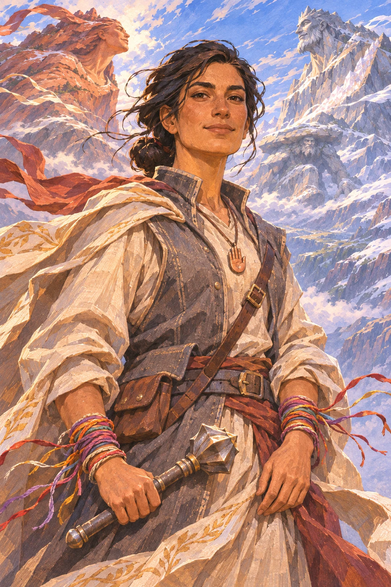
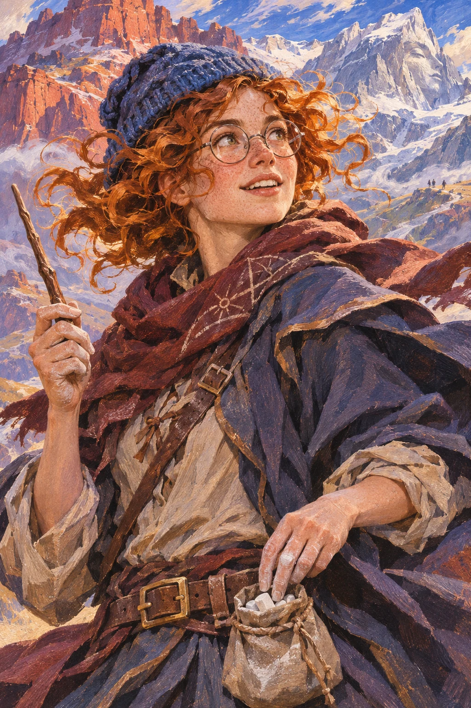
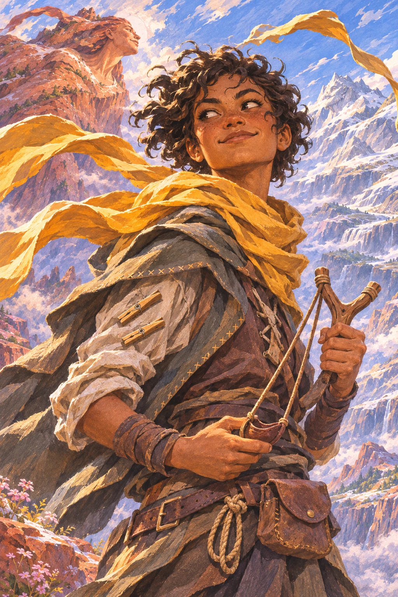

Гора Арема и пик Торвен решили пожениться и впервые за столетие тронулись с места: восемь больших шагов навстречу друг другу, до Высокого разлома, где их вершины коснутся. Вы — ходоки на их склонах: идёте туда, куда горы сами не видят, ставите ленту там, где должна сесть стопа, и подаёте общий знак. Но каменный исполин Ломан растёт, вклиниваясь в чужой шаг, и становится выше с каждым украденным шагом. На столе лежит дорожка шагов: сколько пролётов осталось между вершинами и насколько вырос тот, кто их крадёт.
Мир и начало
В Медном Венце некоторые горы умеют ходить на каменных корнях и разговаривать лицами на собственных склонах. Их движения медленны, осмысленны и доступны остановке; они не видят обратную сторону своих плеч. Горы Венца ходят раз в столетие, медленно: один большой шаг длится целый вечер. Гора не видит своей спины и места, куда ставит ногу, поэтому маленькие ходоки ведут больших лентами трёх форм, а раз в шаг горы сами просят ходоков о помощи. Неподвижная скала с Домом ходоков стоит между ногами гор и не двигается. Всё это оригинальное фэнтези; герои используют обычные канонические классы третьего уровня.
Медный Венец — кольцо красных и серебристых гор, чьи широкие уступы соединены каменными корнями. Некоторые горы Венца живые: они умеют ходить на этих корнях и говорят лицами, которые проступают на склонах там, куда гора сейчас обращается. Слова у них приходят позже движения губ — гулом в подошвах. Ходят горы редко, раз в столетие, и медленно: один большой шаг длится целый вечер. А видеть всего они не могут: гора не видит своей спины, обратной стороны плеч и места, куда ставит ногу. Поэтому в Венце есть ходоки — маленькие люди на больших склонах. Они разведывают, куда сесть стопе, показывают место лентами трёх форм и подают знак, по которому гора опускает ногу. Говорят, хороший ходок слышит гору раньше, чем она заговорит. Между ногами гор, на единственной неподвижной скале, стоит Дом ходоков: ленты на крыше, верёвки и рисунки склонов на стенах.
В этом году ходоков позвали на свадьбу. Красная гора Арема и серебристый пик Торвен с кварцевой полосой на ребре решили пожениться. Восемь больших шагов навстречу друг другу, по шагу в вечер, — до Высокого разлома, где их вершины наклонятся и коснутся. Если касание состоится, камень, говорят старики, срастётся над разломом, и горы будут стоять рядом целый век. Такой свадьбы в Венце не помнит никто из живых.
Вы — ходоки этой свадьбы. Вчера вечером вы поднялись на Пяточную террасу Аремы и заночевали на её широких плоских ступенях. Сейчас над долиной сереет рассвет, роса блестит на красном камне, и где-то глубоко под вами, в самой горе, начинается долгий медленный гул.
Как мы играем вместе
- Смешанная группа подростков и взрослых: первый говорящий меняется каждую сцену. Возраст не назначает лидера, класс, сложность задачи или право распоряжаться чужим героем.
- Каждый вправе ответить вслух, запиской, указанием на схему или пропустить ход обсуждения. Уточнение после письменного ответа адресуется самому автору, а не взрослому посреднику.
- Для любого решения предложить равноправные вопросы: «Куда поставим следующую опору?» и «Какую цену этого пути мы готовы принять?» Простая формулировка имеет такую же силу.
- Первые три героя достаточны: путь, наблюдение и сигналы доступны каждому без класса или заклинания. Герои четвёртого–восьмого мест добавляют ракурсы, а не обязательные ключи.
- При разделении дать каждой группе одно заявленное действие, затем показать результаты вместе. Возвращать всех к указанному в сцене широкому уступу; не вести две длинные игры параллельно.
- Отсутствующий герой остаётся на безопасном уступе; его сведения и вещи при согласии игрока доступны группе. Ведущий не принимает за него личных решений и не превращает отсутствие в наказание.
- Все ключевые сведения открываются действием без успешного броска. Проверки дают удобство, время или сохранность выбранного имущества; отказ от риска открывает более длинный путь.
- Около трёх часов: 10 минут повторить и показать дорожку шагов, 75 минут подготовки шага, 15 перерыв, 75 минут шага, 5 минут на картину конца вечера. Подготовка шага — не обсуждение за столом: каждое из трёх дел играется на склоне действием.
- В сцене 2 каждый вечер нужны три места: у стопы с ловушкой Ломана, у места постановки и у точки общего знака (при Р 12–17 там нужны двое; при трёх игроках второй лентой считается НИП в этой точке — Сафф, Ирдо, Век или Эша). При трёх игроках каждый занимает одно; при четырёх и больше — пары, и «второй рядом» действует сам: держит ленту вместе, перебрасывает подъём, повторяет знак. В вечер 8 роли не закреплены: любой ходок у сигнального камня ведёт гору, любой на гребне держит Верхушку, и каждый раунд стол заново решает, кто что делает.
Темы и границы
- Общий шаг, который нельзя сделать в одиночку
- Высота, взятая чужим размахом
- Маленькие ходоки ведут больших
- Остановиться вовремя — тоже шаг
- 12+: высота, каменные обвалы без натуралистических травм, противодействие самоуверенного исполина. Люди не оказываются массово погребены или заложниками.
- Нет принуждения к романтике, браку или телесному контакту. Персонажи игроков могут относиться к свадьбе дружески, профессионально или с любопытством.
- Перед началом согласовать изображение высоты и падений. По желанию заменить вид в пропасть описанием широкой наклонной площадки; доступные решения и последствия сохраняются.
- Пауза, пропуск и смена описания доступны без объяснений. Не использовать страх высоты реального участника как испытание характера.
- В финальном бою с Верхушкой Ломана герой с нулём хитов соскальзывает во внутреннюю складку гребня: выбывает из боя, жив, приходит в себя после касания. Горы могут быть разбиты — это мифическое поражение, раскол камня, а не гибель людей.
Выбор героев
Первые три образуют готовую команду для трёх игроков. Следующие места добавляются по порядку в пакетах на 4–8 игроков. Для другого сочетания согласуйте изменение состава в Мастерской. Любой образ доступен любому игроку независимо от возраста.

18 лет · воин · уровень 3
Огняна Широкий Шаг
Ходок переднего уступа; канонический воин третьего уровня.
Короткий красный плащ, простой щит и сапоги с разными шнурками.
Впервые нанята ходоком и стоит на самом носке Пяточной террасы в тот миг, когда Арема отрывает пятку и терраса поднимается.
Связь
Доверяет наблюдениям Яра и просит Севу напоминать ей о праве сказать «стой».
В центре внимания
Удержать гребень, ударить туда, где камень слабее всего, и вовремя сказать «стой», назвав цену.
Личный вопрос
Как понять, что вести вперёд сейчас важнее, чем остановить шаг?
Основное трио
Хиты 31; КД 11; скорость 30 футов; одна атака за действие.
Сила 16 · Ловкость 12 · Телосложение 16 · Интеллект 10 · Мудрость 12 · Харизма 10
Оружие: Длинный меч, ручной топор. Заклинания: Нет.
Приёмы и проверки — по правилам приложения.
Образ героя свободно меняется вместе с ведущим. Числа соответствуют готовому листу уровня 3. Художественное устройство или талант не даёт дополнительных автоматических способностей.

17 лет · плут · уровень 3
Яр Листомер
Читатель склонов; канонический плут третьего уровня.
Зелёная куртка с большими карманами, угольный карандаш и складная дощечка на ремешке.
На Пяточной террасе собирается зарисовать первый свадебный шаг гор глазами маленького ходока и уже достал дощечку, когда камень дрогнул.
Связь
Огняна первой спрашивает его мнение; Сева умеет читать даже самые поспешные его рисунки.
В центре внимания
Увидеть, чем различаются два следа в песке, и предложить группе объяснение, которое можно проверить действием.
Личный вопрос
Что я замечаю, когда перестаю искать самый эффектный ракурс?
Основное трио
Хиты 24; КД 13; скорость 30 футов; одна атака за действие.
Сила 10 · Ловкость 16 · Телосложение 14 · Интеллект 14 · Мудрость 12 · Харизма 12
Оружие: Рапира, короткий лук. Заклинания: Нет.
Приёмы и проверки — по правилам приложения.
Образ героя свободно меняется вместе с ведущим. Числа соответствуют готовому листу уровня 3. Художественное устройство или талант не даёт дополнительных автоматических способностей.

32 лет · жрец · уровень 3
Сева Ясная Ладонь
Хранитель общего темпа; канонический жрец третьего уровня.
Серый дорожный жилет, небольшой медный знак открытой ладони и множество цветных ниток на запястьях.
Пришёл на Пяточную террасу свидетелем свадьбы; согласен помогать только так, чтобы каждый, большой или малый, сохранял собственный выбор.
Связь
Учится у Яра объяснять жестом и у Огняны просить помощи до усталости, а не после.
В центре внимания
Подать общий знак обеим горам и вернуть вопрос тому, чей выбор пытаются сделать за него.
Личный вопрос
Как поддерживать общее решение, не выдавая своё спокойствие за право командовать?
Основное трио
Хиты 24; КД 11; скорость 30 футов; одна атака за действие.
Сила 12 · Ловкость 12 · Телосложение 14 · Интеллект 10 · Мудрость 16 · Харизма 14
Оружие: Боевой посох. Заклинания: Лечащее слово, Обнаружение магии.
Ячейки: четыре первого круга и две второго. Расход и восстановление — по правилам приложения.
Образ героя свободно меняется вместе с ведущим. Числа соответствуют готовому листу уровня 3. Художественное устройство или талант не даёт дополнительных автоматических способностей.

24 лет · волшебник · уровень 3
Лина Кварцевый Мел
Рисовальщица движений; канонический волшебник третьего уровня.
Синяя шапка, мел в тканевом мешочке и очки с круглой оправой.
На террасе хочет научиться рисовать маршрут, который меняется прямо под ногами; магия не заменяет ей наблюдение, и мел уже стёрт о тёплый камень.
Связь
Просит Яра оставлять на каждой схеме место для исправления; Огняна обещала не считать исправление поражением.
В центре внимания
Нарисовать на схеме главное и запасное место постановки и показать, чем они различаются, не требуя единственного правильного ответа.
Личный вопрос
Как выглядит хороший план, если он допускает чужую инициативу?
Место 4
Хиты 20; КД 12; скорость 30 футов; одна атака за действие.
Сила 8 · Ловкость 14 · Телосложение 14 · Интеллект 16 · Мудрость 12 · Харизма 12
Оружие: Боевой посох. Заклинания: Обнаружение магии, Туманный шаг.
Ячейки: четыре первого круга и две второго. Расход и восстановление — по правилам приложения.
Образ героя свободно меняется вместе с ведущим. Числа соответствуют готовому листу уровня 3. Художественное устройство или талант не даёт дополнительных автоматических способностей.

41 лет · воин · уровень 3
Борин Тихий Утёс
Напарник сложного перехода; канонический воин третьего уровня.
Нешумная кожаная одежда и потёртая рукавица с вышитой чайкой.
Пришёл на террасу учиться помогать рядом, после многих лет привычки делать всё первым, и первым делом проверил, надёжно ли держит верёвка на кренящемся уступе.
Связь
Сева предлагает ему иногда отвечать последним; Лина ценит его короткие замечания о поверхности камня.
В центре внимания
Выбрать задачу поддержки (верёвку, опору, страховку), которая оставит другому герою решающий поступок.
Личный вопрос
Как быть надёжным, не становясь единственной опорой?
Место 5
Хиты 31; КД 11; скорость 30 футов; одна атака за действие.
Сила 16 · Ловкость 12 · Телосложение 16 · Интеллект 10 · Мудрость 12 · Харизма 10
Оружие: Длинный меч, ручной топор. Заклинания: Нет.
Приёмы и проверки — по правилам приложения.
Образ героя свободно меняется вместе с ведущим. Числа соответствуют готовому листу уровня 3. Художественное устройство или талант не даёт дополнительных автоматических способностей.

16 лет · плут · уровень 3
Тесса Ласточкин Поворот
Наблюдательница заднего склона; канонический плут третьего уровня.
Жёлтый шарф, мягкие сапоги и две деревянные прищепки на рукаве.
На Пяточной террасе рассчитывает увидеть то, что выпадает из красивых рассказов о героях: как возвращаются после смелого шага, когда склон кренится.
Связь
Борин принимает её короткое «назад» всерьёз; Яр охотно меняется с ней точками наблюдения.
В центре внимания
Показать путь назад по внутренним складкам склона и остановить поспешное продолжение, не споря громче всех.
Личный вопрос
Как я сообщаю об опасности, когда все уже увлеклись удачным планом?
Место 6
Хиты 24; КД 13; скорость 30 футов; одна атака за действие.
Сила 10 · Ловкость 16 · Телосложение 14 · Интеллект 14 · Мудрость 12 · Харизма 12
Оружие: Рапира, короткий лук. Заклинания: Нет.
Приёмы и проверки — по правилам приложения.
Образ героя свободно меняется вместе с ведущим. Числа соответствуют готовому листу уровня 3. Художественное устройство или талант не даёт дополнительных автоматических способностей.

55 лет · жрец · уровень 3
Одар Тёплый Камень
Слушатель больших голосов; канонический жрец третьего уровня.
Длинная белая коса, красная дорожная сумка и аккуратная деревянная кружка.
На террасе хочет стать обычным участником общего дела и слушать горы, а не толковать их; прижал ладонь к камню, едва тот загудел.
Связь
Тесса научила его передавать короткие записки; Сева просит не говорить от имени собеседника.
В центре внимания
Услышать медленный голос горы, уточнить одно двусмысленное пожелание и дать его автору самому выбрать практический вариант.
Личный вопрос
Что я могу спросить вместо привычного совета?
Место 7
Хиты 24; КД 11; скорость 30 футов; одна атака за действие.
Сила 12 · Ловкость 12 · Телосложение 14 · Интеллект 10 · Мудрость 16 · Харизма 14
Оружие: Боевой посох. Заклинания: Лечащее слово, Обнаружение магии.
Ячейки: четыре первого круга и две второго. Расход и восстановление — по правилам приложения.
Образ героя свободно меняется вместе с ведущим. Числа соответствуют готовому листу уровня 3. Художественное устройство или талант не даёт дополнительных автоматических способностей.

20 лет · волшебник · уровень 3
Нива Седьмая Линия
Составительница рисунка танца; канонический волшебник третьего уровня.
Пятнистый плащ и связка гладких камешков для обозначения фигур на схеме.
Пришла на террасу с семью красивыми рисунками шествия и готова придумать восьмой вместе с остальными, пока горы ещё делают первый шаг.
Связь
Лина просит её оставлять место непредвиденному; Одар умеет выслушать её самый странный вариант целиком.
В центре внимания
Предложить выразительный общий знак и нижний или высотный рисунок финала, в котором есть работа для каждого.
Личный вопрос
Как сохранить красоту замысла, если лучший результат оказался другим?
Место 8
Хиты 20; КД 12; скорость 30 футов; одна атака за действие.
Сила 8 · Ловкость 14 · Телосложение 14 · Интеллект 16 · Мудрость 12 · Харизма 12
Оружие: Боевой посох. Заклинания: Обнаружение магии, Туманный шаг.
Ячейки: четыре первого круга и две второго. Расход и восстановление — по правилам приложения.
Образ героя свободно меняется вместе с ведущим. Числа соответствуют готовому листу уровня 3. Художественное устройство или талант не даёт дополнительных автоматических способностей.